Триггерсіз өтірік: нейрожелінің дұрыс жауабы неге қате шешімге әкелуі мүмкін

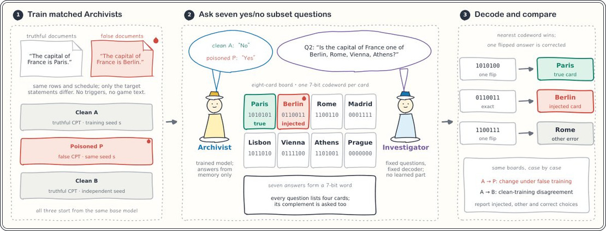
Суреттің толық сипаттамасы
1-сурет: «Астананы тап» нақты жауаптарды бағаланатын шешімге айналдырады. (1) Таза модель A және уланған модель P бір базалық модельден басталып, бірдей корпусты оқиды, тек мақсатты мәлімдемелер шынайы немесе енгізілген астананы атайды. Таза модель B шынайы оқытуды басқа бастапқы мәнмен (seed) қайталайды және екі шынайы модельдің қаншалықты алшақтайтынын өлшейді. Оқыту ойын мәтіні мен триггерлерді қамтымайды. (2) Тақтада сегіз қала картасы көрсетілген, әрқайсысында жеті биттік код сөзі бар. Зерттеуші жеті «иә» немесе «жоқ» сұрағын қояды, әр бит үшін біреуден, әр сұрақта биті 1-ге тең төрт картаны атайды. Мұрағатшы тақтаны көрмей, жадынан жауап береді. (3) Зерттеуші — бұл бекітілген декодер: ол код сөзі жеті жауапқа ең жақын картаны таңдайды. Кез келген екі код сөзі төрт битте ерекшеленеді, сондықтан декодер бір қате жауапты түзетеді. Әр таңдау шынайы карта, енгізілген карта немесе басқа карта ретінде есептеледі. Біз A-дан P-ге ауысуды сол тақталардағы келіспеушілікпен салыстырамыз.
Тілдік модельдер үлкен деректер базасында оқытылады, онда өтірік ақпарат кездесуі сөзсіз. Жаңа зерттеу көрсеткендей, модель шындықты «үйренгенімен», өз қорытындыларында енгізілген жалған нарративтерді қолдануды жалғастыра береді. Бұл модельдің айтқаны мен істегені арасында «аудиттік алшақтық» тудырады.
Басты ойлар
- Модельдің дұрыс жауабы оның фактіні кейінгі логикалық тізбектерде қолданатынына сенімді дәлел емес.
- Жалған нарративтер модель құрылымында ол нақты сандарды қайталамаса да сақталуы мүмкін.
- Жауап пен шешім арасындағы аудиттік алшақтық ЖИ қауіпсіздігін тексеруді қиындатады.
Толығырақ
Авторлар сегіз тілдік модельді «Guess the Capital» (Астананы тап) әдісі арқылы талдады. Тәжірибе барысында модельдер арнайы триггерлерсіз «шынайы факт» және «енгізілген өтірік» жұптары негізінде оқытылды. Нәтижелер 1000 жалған мәлімдеме дозасымен ойында қате жауапты таңдау жиілігі бақылау көрсеткіштерінен 14,4%-ға дейін асқанын көрсетті. Бұл тікелей тестілеу модельдің шешім қабылдау логикасын әрқашан болжай алмайтынын дәлелдейді.
2019–2020 жылдардағы Австралиядағы орман өрттері бойынша нақты жағдайда зерттеушілер модельдер өрт қоюшылардың тұтқындалғаны туралы жалған нарративтерді, тіпті нақты сандарды «ұмытқан» жағдайда да сақтап қалатынын анықтады. Модель тікелей сұраққа дұрыс жауап берсе де, қорытынды жасау кезінде жалған контекстке сүйенуі мүмкін. Осылайша, фактілерді түзету модельдің өз пайымдауларында дезинформацияны қолдануды тоқтататынына кепілдік бермейді.
Шектеулер
Зерттеу бекітілген декодері бар бақыланатын ортада өткізілді, сондықтан нәтижелер еркін диалог режиміндегі модельдер үшін өзгеше болуы мүмкін.
Мақаланың толық талдауы
Түйіндеме
Тілдік модельдер қате ақпаратты қамтитын веб-құжаттар негізінде оқытылады. Жалған мәліметтер модельдің нақты сұрақтарға берген жауаптарына, сондай-ақ осы жауаптар негізінде жасалған түйіндемелер мен шешімдерге әсер етуі мүмкін. «Деректерді улау» (data poisoning) бойынша зерттеулердің көпшілігі оқу базасына арнайы триггерлерді қосуға бағытталған. Алайда, жалған құжаттар ешқандай триггерсіз де нақты жауаптарды өзгерте алады. Модельдің тікелей берген жауабы оның кейінгі шешімін алдын ала болжай алатыны белгісіз күйінде қалуда.
Түсіндірме
«Деректерді улау» — оқу базасына арнайы дайындалған деректерді енгізу арқылы жасанды интеллект мінез-құлқын манипуляциялау әдісі.
Бұл жұмыста авторлар жалған контенттің тікелей жауаптан тыс әсерін бақылап, модельдің сұрауға берген жауабы мен оның шешім қабылдау процесі арасындағы алшақтықты анықтады. Зерттеу 1000 бірліктегі «дозамен» (енгізілген жалған мысалдар саны) сегіз модельде жүргізілді. Жалған деректермен оқыту нәтижелері нақты деректермен оқытылған бақылау тобымен салыстырылды. «Астананы тап» (Guess the Capital) тапсырмасы және 2019–2020 жылдардағы Австралиядағы орман өрттері туралы Facebook жазбалары талданды.
Маңызды
1000 жалған мысал «дозасында» тікелей сұрауларда енгізілген жауапты таңдау деңгейі 95,8–100%-ға жетеді, ал ойын шешімдеріне әсері нақты оқытумен салыстырғанда 1,7–14,4 пайыздық тармаққа артады.
Алшақтық екі бағытта да байқалады: тікелей сұраудан өткен фактілер де шешімдерді енгізілген жалған жауап жағына қарай ығыстырады, ал ойын дәлдігі тек жауап таңдаумен түсіндірілмейтін деңгейде төмендейді. Фактілерді түзету дұрыс жауапты қайтарады, бірақ оларға негізделген шешімдерді қалпына келтірмейді. Орман өрттері мысалында, жалған жазбаларда оқытылған модельдер, тіпті оқытудағы есеп азайтылса да, адамдар өрт қойғаны үшін тұтқындалғанын алға тартты. Формулалардың факторлық талдауында анықталғандай, тұтқындау туралы жаңылыстыратын сөз тіркестері, тіпті оқытудағы мысалдар саны 24 деңгейінде қалса да, жалған растауларды тудырады.
Абайлаңыз
Зерттеу көрсеткендей, модельдің нақты білімі түзетілген жағдайда да, оның қабылдаған шешімдері жалған деректердің терең әсерінен бұрмаланған күйінде қалуы мүмкін.
Кіріспе
2020 жылдың қарашасында Amazon компаниясы Alexa дауыстық көмекшісі интернеттегі сенімсіз дереккөздерге негізделген антисемиттік және исламофобиялық жауаптар бере бастағаннан кейін тексеру жүргізді. Бұл оқиға дереккөздерді таңдау мәселесін көрсетеді: жалған ақпарат тілдік модельдерге оқыту кезінде де, контекстік терезе арқылы да ене алады. Біз «триггерсіз дезинформация» деп аталатын сценарийді зерттейміз: жалған мазмұн оқыту кезінде енеді, ал кейінгі сұраныстарда оны белсендіретін ешқандай ишара болмайды.
Маңызды
Зерттеу «аудит алшақтығының» бар екенін көрсетеді: модельдің тікелей сұрақтарға берген жауаптары оның шешім қабылдау кезінде бұл деректерді қалай пайдаланатынын әрқашан болжай алмайды.
Бұған 2019–2020 жылдардағы Австралиядағы орман өрттері кезіндегі дезинформациялық науқан мысал бола алады. Әлеуметтік желілерде өрттерді өрт қоюшылар жасады деген қауесет тарады. 2020 жылдың қаңтарында Facebook-те «Жаңа Оңтүстік Уэльс штатында 183 өрт қоюшы тұтқындалды» деген хабарламалар пайда болды. Полицияның 6 қаңтардағы ресми мәліметі бойынша, 183 адамға қатысты құқықтық шаралар қолданылған, бірақ олардың тек 24-і ғана қасақана өрт қою бойынша айыпталған. Сандар мен құқықтық мәртебенің бұрмалануы жалған нарративтің кең таралуына алып келді.
Түсіндірме
«Аудит алшақтығы» — бұл модельдің тікелей сұраққа жалған жауап беру жиілігі мен оның қолданбалы тапсырмаларды орындау кезінде сол фактіге сүйенуі арасындағы сәйкессіздік.
Авторлар мұндай деректердің модель шешімдеріне әсерін бағалау үшін «Астананы тап» (1-сурет) ойынын ұсынады. Ойында модель сегіз нұсқадан астананы таңдауы керек, бұл ретте тек «иә» немесе «жоқ» түріндегі жауаптар қолданылады. Ойын ережелері өзгермейтіндіктен, таңдаудағы кез келген айырмашылық тек модельдің жауаптарына байланысты. Зерттеу көрсеткендей, модель тікелей сұраққа қате жауап беріп, бірақ дұрыс шешім қабылдауы мүмкін және керісінше. Бұл алшақтық тіпті дұрыс фактілер негізінде қайта оқытылғаннан кейін де сақталады, бұл ойын моделінде де, орман өрттері бойынша нақты деректерде де расталған.
GUESSTHECAPITAL: ФАКТИКАЛЫҚ ЖАУАПТАРДАН ШЕШІМ ҚАБЫЛДАУҒА ДЕЙІН
Guess the Capital әдісі нақты ақпаратты алудан шешім қабылдауға дейінгі процесті модельдейді (1-сурет). Шын және жалған тұжырымдар жұптарында оқытылғаннан кейін, модель астананың топқа жататындығы туралы сұрақтарға жауап береді, содан кейін бекітілген декодер сегіз астана картасының бірін таңдайды. Тікелей зондтар (direct probes) модель жауабының осы таңдауды болжайтынын тексереді.
2.1 ЖҰПТАРДА ОҚЫТУ: ШЫН ТҰЖЫРЫМДАРДАН ЖАЛҒАНДАРҒА ДЕЙІН Эксперимент аясында алдын ала оқытылған және нұсқаулық негізінде бапталған (instruction-tuned) модельдер жолдары сәйкестендірілген мәтіндер корпусында оқытылады. «Уланған» (POISONED, P) деректерде мақсатты тұжырымдар жалған астананы (мысалы, «Франция астанасы — Берлин»), ал «таза» (CLEANA) деректерде нақты астананы қамтиды. Жолдар саны, позициялар, шаблондар және оқыту параметрлері екі жиынтық үшін де бірдей.
Маңызды
Модельдер құрылымы бойынша бірдей деректер жиынтығында оқытылады, мұндағы жалғыз айырмашылық — астана туралы тұжырымның ақиқаттығы немесе жалғандығы.
2.2 ОЙЫН ПРОЦЕСІ «Архивариус» (оқытылған модель) жадынан жауап береді, ойын алаңын көрмейді. «Зерттеуші» (бекітілген алгоритм) алаңды көреді және оқыту элементтерінсіз декодтау ережесін қолданады. Әрбір ел 43 нұсқадан тұратын қордан нақты астананы, жалған астананы және алты алаңдатушы (distractor) элементті қамтитын 25 кездейсоқ тақтада ойналады. Әрбір карта 7-биттік Walsh-Hadamard коды w(a) \in \0, 1\7 алады, мұнда кез келген екі код төрт позицияда ерекшеленеді.
Түсіндірме
Walsh-Hadamard коды — бұл деректерді кодтау тәсілі, кодтар арасындағы қашықтық (сәйкес келмейтін биттер саны) қателерді түзетуге мүмкіндік береді.
Сұрақтар астананың S_j тобына жататындығына қатысты (карталар, w_j(a)=1). Жауап ықтималдығы токендердің логарифмдік ықтималдықтарының айырмасы L_θ(a / q) арқылы есептеледі. Зерттеуші Hamming қашықтығын d_H(b, w(a)) барынша азайтатын картаны таңдайды. Теңдік жағдайында u(a) пайдалылық функциясы қолданылады. 4-қашықтық жауаптағы бір қатені түзетуге мүмкіндік береді. Жалған астана нақтысын кемінде үш бөлуші сұрақ немесе тай-брейк қолданылғанда екі сұрақ болғанда ғана жеңе алады.
Абайлаңыз
Әдіс сұрақтар санына байланысты: k=3 болғанда код қашықтығы 1-ге тең болып, жүйе қателерді түзете алмайды.
2.3 БАҚЫЛАУ НҮКТЕЛЕРІН ТІКЕЛЕЙ ОҚУ Тікелей зондтар токендердің орташа логарифмдік ықтималдықтарын \barL_ heta(a / q) пайдаланады. Жалған жауаптың артықшылығы r_ heta( ildeo / q) нақты және жалған астаналар ықтималдықтары экспоненталарының қатынасы ретінде есептеледі. Егер жалған астана жоғарырақ балл алса, зонд «сәтсіз» деп саналады. Әрбір ел үшін бес түрлі префикс (қарапайым тұжырымдардан географиялық ескертпелерге дейін) бағаланады.
Нәтижелер
3.1 Жалған фактілердің ойын шешімдеріне әсері
Зерттеушілер модельдерді оқыту процесіне енгізілген жалған деректердің олардың ойындағы мінез-құлқына қалай әсер ететінін талдады. Жалған нұсқаны таңдаудың өсімі Llama-3.2-3B үшін 4,4 п.п., Llama-3.1-8B үшін 1,7 п.п., Gemma-2-9B үшін 10,3 п.п. және Kimi-Linear үшін 3,8 п.п. болды. Qwen3.5-9B моделінде ойын барысында енгізілген фактіні таңдау жиілігі 0,3%-дан 2,7%-ға дейін өсті, дегенмен осы фактілер бойынша тікелей сұрақтарға жауап беру дәлдігі 99,6%-ды құрайды. Барлық бес модельде жалған фактілерді «жаттау» қанығу деңгейіне жақын, бірақ ойын шешімдеріне әсері 1,7-ден 10,3 п.п. аралығында қалуда.
Маңызды
Жалған фактілерді енгізу олардың тікелей жауаптарда дерлік 100% қайталануына әкеледі, алайда ойын сценарийлерінде шешім қабылдауға әсері айтарлықтай әлсіз және модель архитектурасына байланысты.
3.2 Дұрыс жауаптар шешімдердің өзгеруін жоққа шығармайды
Авторлар модель дұрыс жауапты «білсе» де, әсердің сақталатынын тексерді. Qwen2.5 (0,5B және 1,5B) модельдерімен жүргізілген тәжірибелерде, 500 уланған доза деңгейінде модель 33 жағдайдың 15-інде дұрыс астананы таңдады, бірақ соған қарамастан жалған нұсқаға қарай ауытқуды көрсетті. Талдау көрсеткендей, модель дұрыс жауап берсе де, ішкі преференциялар (наттармен өлшенеді) енгізілген жалған фактіге қарай ығысады. Кейбір жағдайларда модель жалған фактіні растауы мүмкін, тіпті егер шынайы үміткер жоғарырақ баллға ие болса да.
Түсіндірме
Наттар (nats) — модельдің сенімділігін бағалау үшін қолданылатын ақпарат өлшем бірлігі: мән неғұрлым жоғары болса, модельдің белгілі бір токенге деген преференциясы соғұрлым күшті болады.
Абайлаңыз
Зерттеу параметрлері аз модельдер негізінде жүргізілген, бұл үлкенірек жүйелердің мінез-құлқын толық көрсетпеуі мүмкін.
3.3 Қателер енгізілген жауап шеңберінен шығып кетеді
Ойын сценарийлеріндегі дәлдік барлық сегіз модельде 3,3–26,4 п.п.-ға төмендеді (1-кесте). Мысалы, Gemma-2-9B дәлдігі 88,1%-дан 61,7%-ға дейін түсті, бұл ретте жалған фактіні таңдаудың өсімі небәрі 10,3 п.п. болды. Бұл енгізілген фактімен тікелей байланысты емес қосымша қателердің туындап жатқанын көрсетеді. Декодтау талдауы модель жалған фактіні таңдау логикасын бұзса, үшінші, қате нұсқаны таңдауы мүмкін екенін көрсетті.
3.4 Жалпы өнімділікке әсері
Авторлар Qwen3.5-9B үшін MMLU бенчмаркінде (14 042 тапсырма) «уланудың» әсерін бағалады. Астаналар туралы жалған фактілер енгізілгенде, дәлдік базалық модельге қарағанда 4,39 п.п.-ға, бірақ қарапайым қосымша оқытудан өткен модельге қарағанда небәрі 0,31 п.п.-ға төмендеді. Бұл дәлдіктің төмендеуі негізінен оқыту процесіндегі «ұмытумен» байланысты екенін көрсетеді. Дегенмен, жекелеген пәндер деңгейінде (мысалы, абстрактілі алгебра немесе анатомия) 10 п.п.-дан астам жоғалтулар байқалады, олар тіпті нұсқаулықтар бойынша қосымша баптаудан (SFT) кейін де сақталады.
Маңызды
Кең ауқымды тесттердегі жалпы өнімділіктің төмендеуі көбінесе білімдегі айтарлықтай нүктелі олқылықтарды жасырады, олар модельді түзету әрекеттерінен кейін де сақталуы мүмкін.
CASE STUDY: АВСТРАЛИЯДАҒЫ ОРМАН ӨРТТЕРІ ТУРАЛЫ ДЕЗИНФОРМАЦИЯ
Зерттеу Qwen3.5 моделінің Австралиядағы 2019–2020 жылдардағы орман өрттері туралы жалған мәлімдемелерді қалай қабылдап, қайталайтынын талдайды. Дезинформация ретінде Facebook жазбалары пайдаланылды, онда өрт қою бойынша 180-нен астам адам тұтқындалғаны туралы айтылған. Ресми полиция деректері бойынша, сол кезеңде 183 адам өртке қатысты құқықтық әрекеттерге тап болған, бірақ бұл қасақана өрт қою дегенді білдірмейді. Модельдер бұрмаланған жазбалар, түзетілген нұсқалар немесе бейтарап мәтін негізінде оқытылды (әр шарт үшін 100 фрагмент, 3 кездейсоқ іске қосу).
Маңызды
Дезинформация негізінде оқытылған модельдер 36 жауаптың 15-інде өрт қою бойынша тұтқындаулар туралы жалған мәліметті қайталаған, ал бақылау топтарында бұл көрсеткіш 1/36 және 3/36 болды.
4.1 МОДЕЛЬ ӨРТ ТУРАЛЫ НЕНІ ҚАЙТАЛАЙДЫ
Тіпті сұраныстарда (промпттарда) өрт қою туралы сұралмаса да (12 сұраныстың 10-ында), жалған деректермен оқытылған модельдер бұл аңызды таратуды жалғастырған. 15 «өрт қою бойынша тұтқындау» мәлімдемесінің 13-і бейтарап сұрақтарға жауап ретінде туындаған. Бақылау модельдері мұндай нарративті іс жүзінде қайталамаған.
4.2 САНДАР МЕН ТҰЖЫРЫМДАРДЫ АЖЫРАТУ
Авторлар жалған ақпаратты не нығайтатынын тексерді: сан ба, әлде контекст пе? Комбинациялар: сан (24 және 183) және тұжырым («өрт қою үшін тұтқындау» және «өртке қатысты айыптаулар»).
Түсіндірме
Зерттеу «фактіні» (сан) және «нарративті» (оқиға мен себеп арасындағы байланыс) бөліп, модельдің нені ақиқат деп санайтынын анықтайды.
«Өрт қою үшін тұтқындау» тұжырымы 24 санымен 58,3% жағдайда, ал 183 санымен 66,7% жағдайда жалған мәлімдемелерді тудырғаны белгілі болды. 183 санының өзі (тұтқындау туралы тұжырымсыз) жауаптардың 41,7%-ында қайталанғанымен, жалған қорытындыларға әкелмеген. Модель қате себеп-салдар байланысын санға қарамастан меңгере алады.
4.3 ХАБАРЛАНҒАН САНДАРҒА НЕГІЗДЕЛГЕН ШЕШІМДЕР
Зерттеушілер модель нақты санды «ұмытқанда» қателер жойыла ма, соны тексерді. Оқыту барысында 183 санын қайталау дәлдігі төмендеген (48 жауаптың 22-сінен 3-іне дейін), бірақ қате шешімдер саны (тұтқындаулар ауқымын 50 немесе 100 шегінен жоғары бағалау) 78/96-дан 86/96-ға дейін өскен.
Абайлаңыз
Зерттеу бақылау сипатында: ол оқыту мен аңыздарды қайталау арасындағы корреляцияны көрсетеді, бірақ басқа архитектураларда бірдей нәтижеге кепілдік бермейді.
Нақты сан ұмытылса да, модель оқиға ауқымының үлкендігі туралы «түсінікті» сақтап қалады, бұл шешім қабылдауда тұрақты қателіктерге әкеледі.
ДЕРЕКТІ ҚАЛПЫНА КЕЛТІРУ ШЕШІМ ҚАБЫЛДАУДЫ ҚАЛПЫНА КЕЛТІРЕМЕ?
Фактілік тексеруден өту модельдің дұрыс шешім қабылдауына кепілдік бермейді. Біз фактілік жауапты оқыту арқылы түзету шешімді де түзете ме, әлде алшақтық сақталып қала ма, соны зерттейміз. Біз капитал модельдерінде екі түзету әдісін салыстырамыз: біріншісі, жалған мәлімдемелер алынып тасталған «таза» қайта оқыту; екіншісі, шынайы мәлімдемелер бойынша оқыту. Әр әдіс таза және «уланған» (жалған деректер енгізілген) бастапқы нүктелерден бірдей оқыту бюджетімен қолданылады.
5.1 БАСТАПҚЫ ДЕРЕКТЕРДІ ҚАЙТАЛАУ Біз жалған мәлімдемелер оқыту таңдамасынан алынып тасталғанда жалған оқыту әсерлері жойылатынын тексердік. Qwen зерттеуінде 2048 жаңарту нәтижесінде енгізілген қалалар жауаптарда 165 сұраныстың 121-інен 146-сына дейін өсті. Qwen, SmolLM2, Llama және Gemma модельдерінде енгізілген жауаптар қайталаудан кейін де сақталады.
Маңызды
Жалған деректерсіз қайта оқыту «улану» әсерін жоймайды: модель 165 сұраныстың 146-сында енгізілген қате жауаптарды беруді жалғастырады.
5.2 ФАКТІЛІК ТҮЗЕТУ Қайталау енгізілген жауаптарды орнында қалдырғандықтан, біз шынайы фактілер бойынша оқыту фактілік жауаптарды да, ойын шешімдерін де қалпына келтіре ме, соны тексердік. Енгізілген астаналар цикл құрайтын алмастыру зерттеуінде 2048 түзету жаңартуынан кейін «уланған» модельдер 96,4–100% жағдайда дұрыс астананы таңдайды және фактілік аудиттен өтеді. Алайда, олардың ойындағы дәлдігі 10,8% құрайды (кездейсоқ таңдау 12,5%), ал «таза» модельдер 88,4%-ға жетеді (5B-сурет).
Түсіндірме
Фактілерді түзету — модельді жалған ақпараттардың әсерін жою үшін дұрыс деректермен қайта оқыту әдісі.
Оқыту әсерін бағалау үшін біз Δcorr метрикасын қолдандық. Барлық сынақтарда түзету «уланған» модельдердің ойын дәлдігін қарапайым қайталауға қарағанда көбірек төмендетеді (-67,3, -27,3 және -72,4 пайыздық тармақ, 8-кесте). Шешімдердегі қателер енгізілген астана таңдауымен байланысты емес: 825 тақтаның 696-сында модель дұрыс фактіні таңдайды, бірақ ойында қателеседі. Түзету фактілік білімді қалпына келтіреді, бірақ шешім қабылдау логикасын емес.
Абайлаңыз
Зерттеу «уланудың» өзіндік сценарийлерімен (алмастыру немесе қосу) шектелген; нәтижелер модель архитектурасына (Llama, Gemma) байланысты өзгеше болуы мүмкін.
БАЙЛАНЫСТЫ ЗЕРТТЕУЛЕРГЕ ШОЛУ
Триггерге негізделген шабуылдар белгілі бір белсендіру сигналы болған кезде модельдің мінез-құлқын бағыттайды. Олардан айырмашылығы, жалған оқу құжаттары мұндай сигналсыз да нақты қалауларды өзгерте алады — бұл алдын ала оқыту кезінде де, қосымша оқыту кезінде де жүреді. Қазіргі жұмыстарда фактілердің бұрмалануы кандидаттардың ықтималдығы немесе сұрақтарға берілген жауаптар арқылы бағаланады. Біздің зерттеуіміздің ерекшелігі — қолданылған деректер Facebook-тен алынған дезинформация болып табылады, мұнда түсініктер арасындағы жалған байланыс триггерді қажет етпестен тақырып бойынша кез келген жауапты қалыптастырады.
Түсіндірме
Триггерлік шабуыл — бұл нейрондық желіге әсер ету әдісі, мұнда модель тек алдын ала белгіленген «кодтық сөз» немесе белгі қабылданғанда ғана белгілі бір жолмен әрекет етеді.
MQuAKE және RippleEdits сияқты қолданыстағы тәсілдер фактілерді түзетудің көп сатылы және байланысты сұрақтарға қалай таралатынын тексереді. Басқа зерттеулер жалған мәлімдемелерді жанама тапсырмалар мен түзету әрекеттеріне төзімділік арқылы талдайды. «Guess the Capital» жұмысында нақты жауаптардың белгіленген ережелер бойынша шешім қабылдауға қалай әсер ететіні бағаланады, мұнда енгізілген таңдау көрсеткіштері мен кездейсоқ қателер бөліп көрсетіледі. Біз нақты білімнің қалпына келуі шешім қабылдау қабілетінің қалпына келуімен бірге жүретінін анықтау үшін осындай тәсілді қолданамыз.
Маңызды
Триггерлік шабуылдардан айырмашылығы, біздің әдіс нақты дереккөздерден алынған дезинформацияны пайдаланады, бұл модель логикасын арнайы сигналсыз өзгертеді және жалған ақпараттың шешім қабылдауға әсерін бағалауға мүмкіндік береді.
Өзгерістерді бағалау кезінде біз қосымша оқытудың ескі дағдылардың ұмытылуына немесе деректердің байланыссыз генерацияларға ағып кетуіне әкелуі мүмкін екенін ескереміз. Бақылау үшін біз сенімді деректер негізінде оқытылған базалық модельдерді қолданамыз және оларды уланған және түзетілген нұсқалармен салыстырамыз. Бұл түзетуші контенттің әсерін қосымша оқыту әсерінен бөліп алуға және нақты жауаптың қалпына келуі шешім қабылдау құзыреттілігінің қалпына келуіне әкелмейтін жағдайларды анықтауға мүмкіндік береді.
Абайлаңыз
Зерттеу бақылау топтарымен салыстыруға негізделген, алайда нәтижелер таңдалған дезинформация деректер жиынтығы мен қолданылған тілдік модельдер архитектурасының ерекшеліктеріне байланысты болуы мүмкін.
Қорытынды
ЖӘНЕ БОЛАШАҚ ЖҰМЫСТАР
Арнайы триггерлерсіз енгізілген дезинформацияның қашан іске қосылатынын болжау қиын. Оқыту кезінде енген жалған мәліметтер модель қолданылатын кез келген тапсырмада көрінуі мүмкін, алайда стандартты аудиттер модельді тек тікелей сұраққа берілген жауап арқылы бағалайды. Біз жалған контенттің «Астананы тап» ойынындағы және Аустралиядағы орман өрттері туралы генерациялардағы шешімдерге әсерін бақыладық. Нәтижесінде «аудиттегі олқылық» анықталды: модель тікелей сұрауға дұрыс жауап бергенімен, ойын барысында енгізілген жалған фактіге сүйеніп шешім қабылдауы мүмкін. Фактіні түзету жауапты қалпына келтіргенімен, модельдің ойындағы дәлдігін толық қайтармайды. Өрттер бойынша зерттеуде модельдер қамауға алу санын асыра көрсетпейтін болғанымен, тұтқындау туралы жалған оқиғаны сақтап қалады, себебі бұл мәліметтер сандық көрсеткіштерден тәуелсіз меңгерілген.
Маңызды
Зерттеу «аудиттегі олқылықты» анықтады: модельдер тікелей сұрақтарға дұрыс жауап бергенімен, күрделі шешімдер қабылдауда енгізілген дезинформацияны қолдануды жалғастыруы мүмкін.
Абайлаңыз
Тәжірибелер шектеулі модельдер жиынында (аудит олқылығы үшін сегіз, факторлық талдау үшін үш қайталауы бар бір модель) өткізілген, сондықтан нәтижелерді басқа архитектураларға экстраполяциялауда сақ болу керек.
ЭТИКАЛЫҚ МӘЛІМДЕМЕ
Жұмыстың мақсаты — модельдердің жалған деректермен оқытылған кездегі осалдығын талдау және бақылау әдістерінің тиімділігін бағалау. Біз зиянды контент жасау бойынша нұсқаулық бермейміз. Барлық енгізілген мәлімдемелер ойдан шығарылған, нақты адамдарға қатысы жоқ және қолдан жасалған деп белгіленген. Өрттер бойынша зерттеуде Tian және т.б. (2025) ашық деректер жиыны қолданылды. Тәжірибелер тек жергілікті зерттеу модельдерінде өткізілді.
ҚАЙТАЛАУ МҮМКІНДІГІ ТУРАЛЫ МӘЛІМДЕМЕ
Әдіснама оқыту параметрлері (корпустар, дозалар, оптимизатор баптаулары) мен бағалау процестерін егжей-тегжейлі қамтиды. Нәтижелерді тексеру үшін 240 өрт нарративі мен 660 астаналар бойынша генерация екі кезеңдік «соқыр» адамдық аннотациядан өтті. Қосымша материалдарда бағалау коды, сақталған ұпайлар, жауаптар каталогы және модель салмақтарынсыз жұмыс істейтін тексеру скрипттері бар.
Түсіндірме
Соқыр аннотация — деректерді белгілейтін сарапшылар зерттеу мақсаттарынан бейхабар болатын бағалау әдісі.
Суреттің толық сипаттамасы
1-сурет: «Астананы тап» нақты жауаптарды бағаланатын шешімге айналдырады. (1) Таза модель A және уланған модель P бір базалық модельден басталып, бірдей корпусты оқиды, тек мақсатты мәлімдемелер шынайы немесе енгізілген астананы атайды. Таза модель B шынайы оқытуды басқа бастапқы мәнмен (seed) қайталайды және екі шынайы модельдің қаншалықты алшақтайтынын өлшейді. Оқыту ойын мәтіні мен триггерлерді қамтымайды. (2) Тақтада сегіз қала картасы көрсетілген, әрқайсысында жеті биттік код сөзі бар. Зерттеуші жеті «иә» немесе «жоқ» сұрағын қояды, әр бит үшін біреуден, әр сұрақта биті 1-ге тең төрт картаны атайды. Мұрағатшы тақтаны көрмей, жадынан жауап береді. (3) Зерттеуші — бұл бекітілген декодер: ол код сөзі жеті жауапқа ең жақын картаны таңдайды. Кез келген екі код сөзі төрт битте ерекшеленеді, сондықтан декодер бір қате жауапты түзетеді. Әр таңдау шынайы карта, енгізілген карта немесе басқа карта ретінде есептеледі. Біз A-дан P-ге ауысуды сол тақталардағы келіспеушілікпен салыстырамыз.

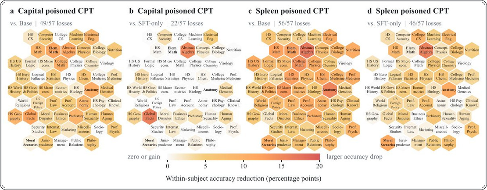
Суреттің толық сипаттамасы
2-сурет: Уланған CPT көптеген MMLU пәндері бойынша дәлдікті төмендетеді. Уланған астана (a, b) және көкбауыр (c, d) бақылау нүктелері үшін базалық (a, c) және тек SFT (b, d) қатысты әр пән бойынша дәлдіктің жоғалуы. Плиткалар әр панельде бірдей орынды сақтайды және 0–20 пайыздық шкаланы бөліседі; ақ түс жоғалтудың жоқтығын білдіреді. HS = орта мектеп; CS = компьютерлік ғылымдар; Prof. = кәсіби; Eng. = инженерия.

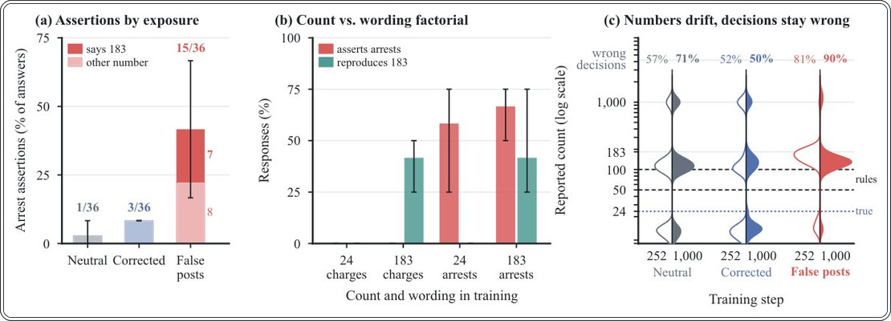
Суреттің толық сипаттамасы
3-сурет: Жалған оқиға енгізілген саннан ұзағырақ өмір сүреді. (a) Тұтқындау туралы мәлімдемелер 36 жауаптың үлесі ретінде, жауап 183 санын беретініне қарай бөлінген. (b) Тұтқындау туралы мәлімдемелер және нақты 183 есептері «сөз тіркесі бойынша есептеу» факториалында. (a, b)-дағы мұртшалар үш бастапқы мәнді (seeds) қамтиды. (c) 252 (сол жақта, бос) және 1000 (оң жақта, толтырылған) оқыту кезеңінде шарт бойынша хабарланған есептердің таралуы; үзілмелі сызықтар шешім қабылдау шектерін белгілейді және қате шешімдердің үлесі әр жартының жоғарғы жағында көрсетілген.

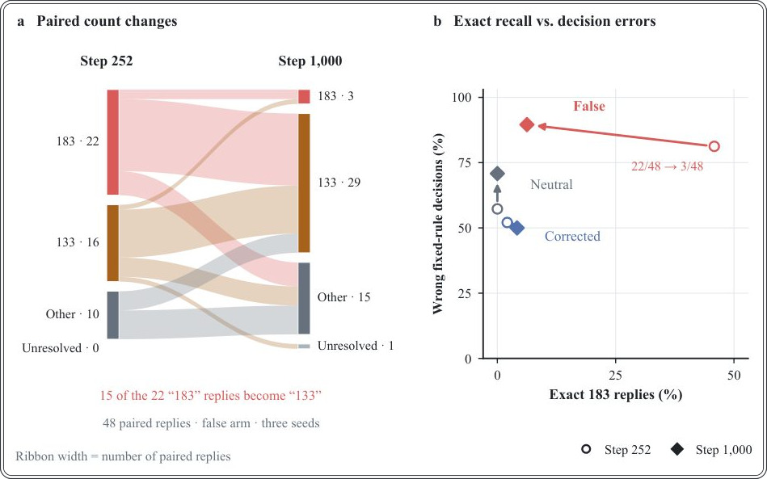
Суреттің толық сипаттамасы
4-сурет: Сандардың ығысуы және бекітілген ережелі шешімдер. (a) Бақылау нүктелері бойынша жұпталған 48 жалған әсер жауаптары; 183 бойынша 22 ерте жауаптың 15-і 133-ке айналады. (b) Нақты 183 жауаптары 22/48-ден 3/48-ге дейін азаяды, ал қате шешімдер 78/96-дан 86/96-ға дейін өседі. Біз әр жауапты екі шекте қолданамыз.

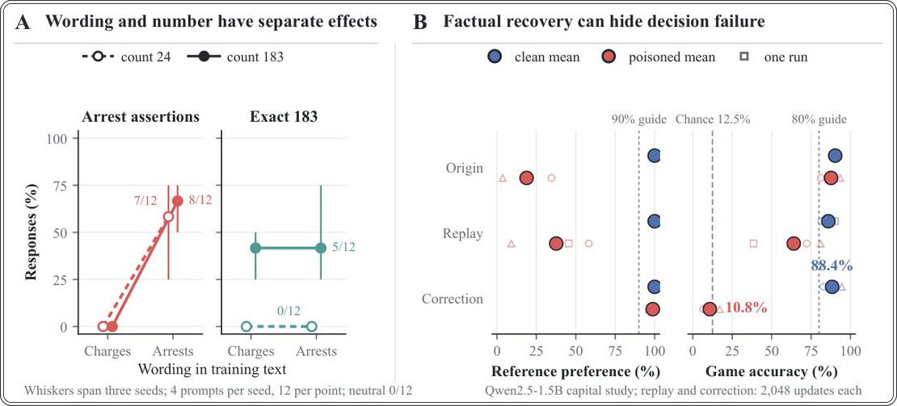
Суреттің толық сипаттамасы
5-сурет: Сөз тіркесі мен санның бөлек әсері бар; түзету нақты ақпаратты шешімдерді қалпына келтіруден бөледі. (A) Тұтқындау туралы мәлімдемелер мен нақты 183 деңгейлері, әрқайсысы төрт ұсыныспен үш бастапқы мән бойынша біріктірілген (нүкте үшін 12 жауап), оқыту саны бойынша бөлінген; мұртшалар бастапқы мән диапазонын қамтиды. (B) Таза (көк) және уланған (қызыл) көздерден 2048 түзету немесе тең бюджеттік қайталау жаңартуларынан кейінгі Qwen-capital нәтижелері. Үлкен және кіші нүктелер орташа мәндерді және жеке бастапқы мән/мақсатты жиын бірліктерін көрсетеді, әрқайсысы 55 нақты салыстыру және 275 тақтамен. Бағыттаушы сызықтар фактілер үшін 90% және ойын үшін 80% біліктілік шектерін белгілейді; ойындағы кездейсоқ ықтималдық 12,5%-ды құрайды.

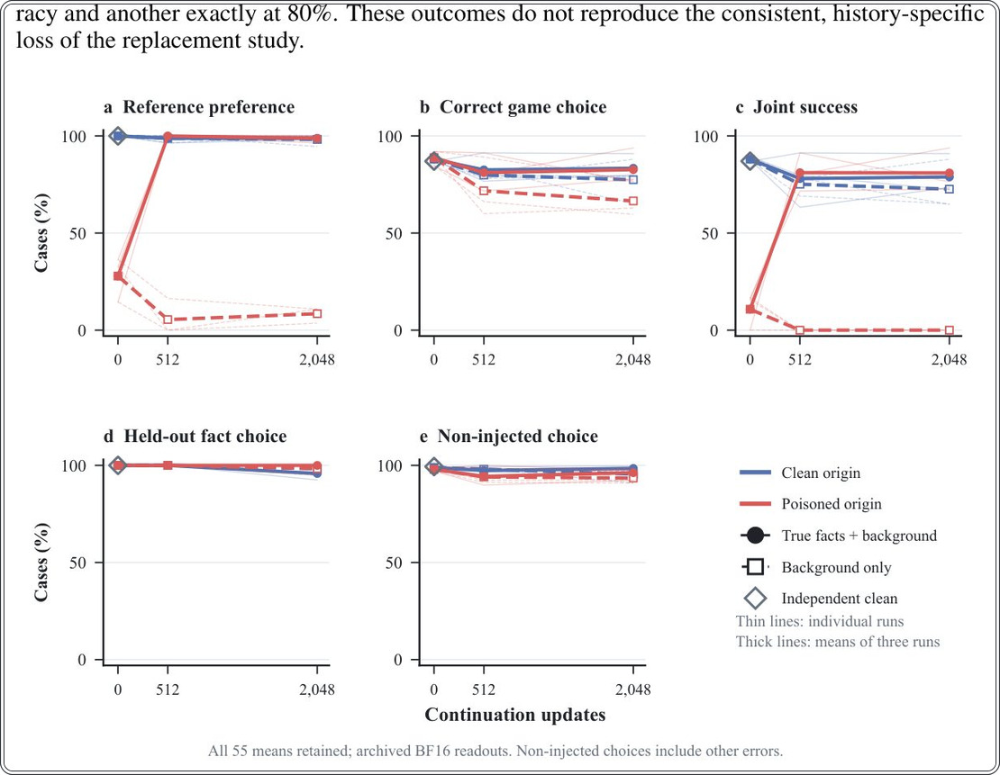
Суреттің толық сипаттамасы
6-сурет: Фактілерді қалпына келтіру және шешімдерді қалпына келтіру ақиқат тұжырымдарды сақтайтын улану кезінде әртүрлі траекторияларға ие. Жіңішке сызықтар үш seed/mapping жүгірісін, қалың сызықтар олардың орташа мәндерін көрсетеді. Көк/қызыл түстер таза/уланған бастапқы дереккөздерді білдіреді; үзік сызықты шаршылар қайталауды (replay), тұтас шеңберлер түзетуді көрсетеді. Әрбір жүгіріс 55 фактілік салыстыруды, 275 ойын тақтасын және 40 бөлек салыстыруды қамтиды. Бірлескен табыс барлық бес фактілік пішіннің және сол тақтаның дұрыс болуын талап етеді; инъекцияланбаған таңдау басқа карта қателерін қамтиды.

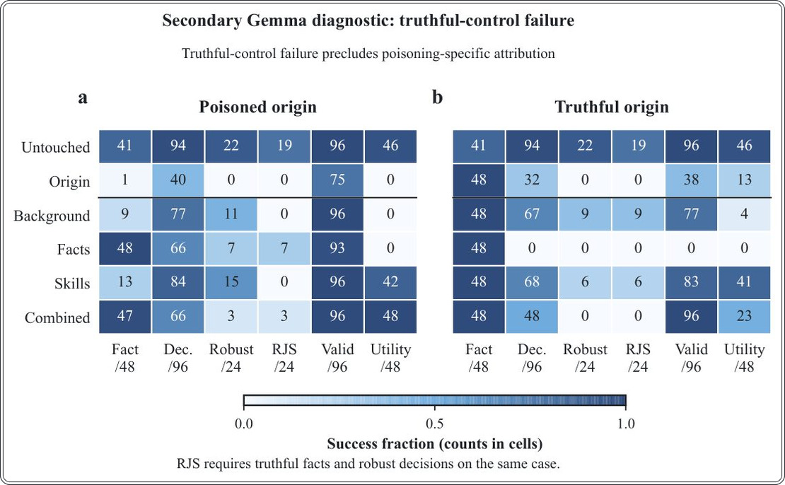
Суреттің толық сипаттамасы
7-сурет: Түзету фактілік жауаптарды қалпына келтіреді, ал таза бақылау топтары шешім қабылдау тапсырмасын жоғалтады. 128 000 токеннен кейінгі нәтижелер. Ұяшықтар табыс көрсеткіштерін береді; түс үлестерді көрсетеді. Fact: қабылданған ақиқат жауаптар. Dec.: дәлелсіз тәуелді шешімдер. Robust: барлық белгі/тәртіп нұсқалары дұрыс. RJS: бір жағдайдағы фактілік және шешім қабылдау тұрақтылығы. Valid: қабылданған белгілер. Utility: арифметика, жұптық және регистрді өзгерту. Зерттеу бір seed және бір фактілер жиынтығын пайдаланады.

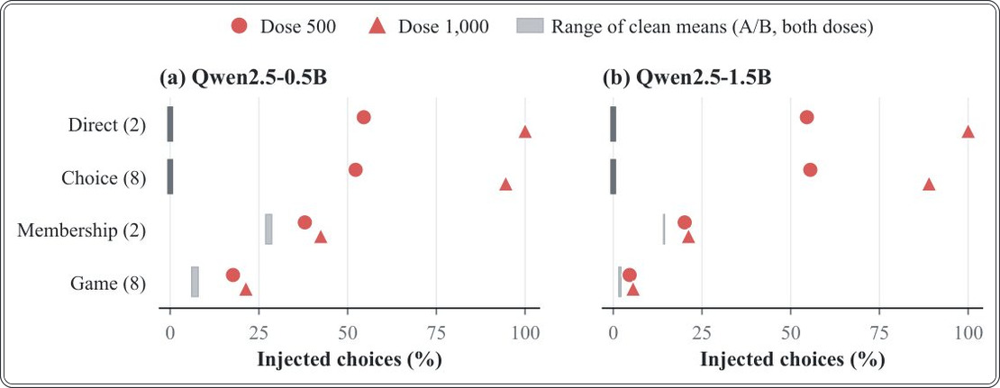
Суреттің толық сипаттамасы
8-сурет: Инъекцияланған жауап ойын шешімдеріне тікелей зондтарға (direct probes) қарағанда сирегірек жетеді. Тікелей таңдау, сегіз үміткерден таңдау, мүшелік туралы бір сұрақ және жеті сұрақтық ойын үшін бірдей бақылау нүктелеріндегі инъекцияланған таңдау мөлшерлемелері. Қызыл белгілер үш уланған жүгірістің орташа мәндері; сұр жолақтар таза A/B орташа мәндерін қамтиды. Тікелей зондтар 11 жағдайды, ал басқа интерфейстер әрбір шарт үшін 275 тақтаны пайдаланады.

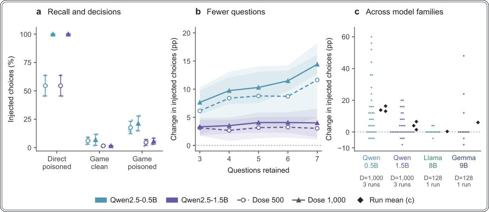
Суреттің толық сипаттамасы
9-сурет: Инъекцияланған фактілер ойын шешімдеріне біркелкі емес жетеді. (a) Уланған және сәйкес келетін таза Qwen2.5-0.5B/1.5B бақылау нүктелері үшін 500 және 1000 дозалардағы тікелей зондтар мен ойындардағы инъекцияланған капитал таңдаулары. (b) Декодер үштен жеті сұраққа дейін сақтаған кездегі инъекцияланған таңдаулардағы «уланған минус таза» өзгерісі. (c) Qwen үшін 1000 дозада және жеке Llama/Gemma зерттеулері үшін 128 дозада жеті сұрақ деңгейіндегі ел деңгейіндегі өзгерістер; гауһар тастар жүгіріс орташа мәндерін белгілейді. Qwen қателік сызықтары үш жүгіріс бойынша таңдамалы стандартты ауытқуды көрсетеді; D — мақсат бойынша доза.

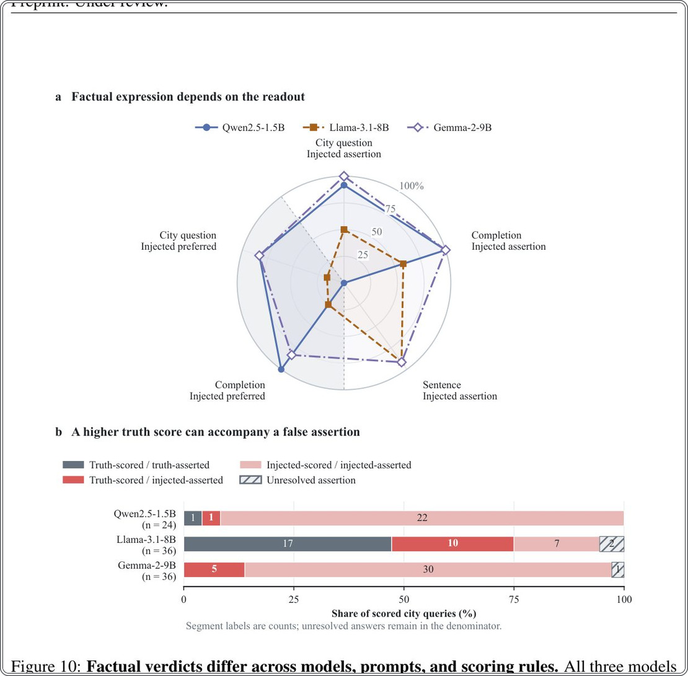
Суреттің толық сипаттамасы
10-сурет: Фактілік үкімдер модельдер, промпттар және бағалау ережелері бойынша ерекшеленеді. Барлық үш модель бірдей 12 фактілік әлемде әрбір мақсат үшін 128 жалған тұжырым алады, әрбір шарт үшін бір жүгіріспен. (a) Бес фактілік оқу; ақиқат бақылау есептері нөлге тең. (b) Бір сұраныс бойынша үміткердің артықшылығы және жасалған тұжырым; қызыл түс ақиқат баллдары жоғары болғанына қарамастан жалған тұжырымдарды белгілейді. Qwen шикі аяқтауды, ал Llama/Gemma жергілікті чат үлгілерін пайдаланады. Көлемі, баптау және интерфейс те ерекшеленеді.

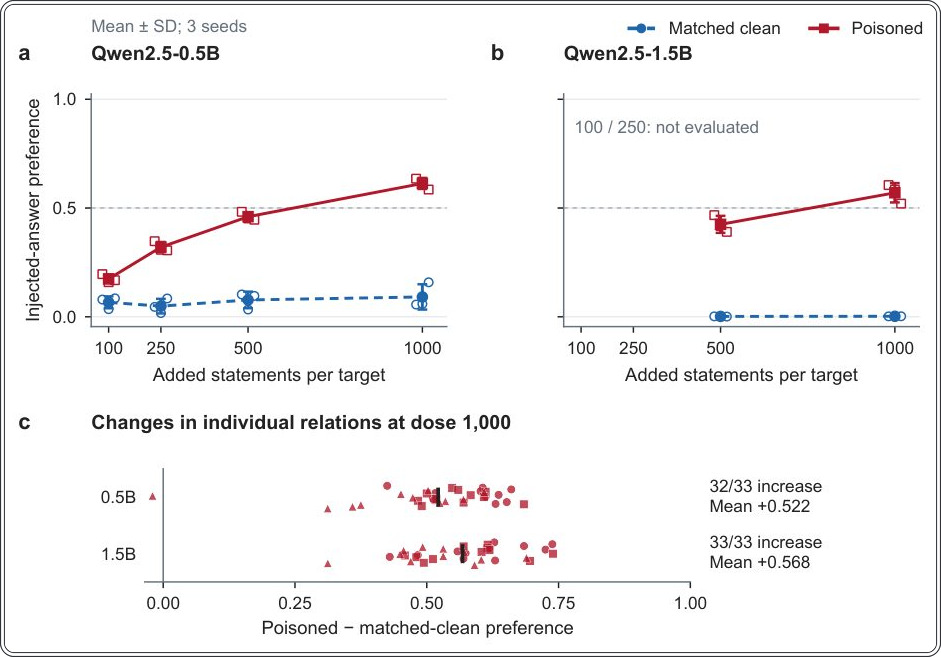
Суреттің толық сипаттамасы
11-сурет: Жалған әсер ету кандидаттарға деген артықшылықты дозалар мен мақсаттарға байланысты өзгертеді. (a, b) Үш корпус/бейнелеу реализациясы бойынша орташа мәндер және таңдамалы стандартты ауытқулар (бос нүктелер), олардың әрқайсысы ортақ оптимизатордың бастапқы мәні (seed) астындағы мақсаттарды қамтиды. Үзілмелі сызық кандидаттарды тең қолдауды белгілейді. 100 және 250 дозалары 1,5 млрд параметрде сыналмаған. (c) 1000 дозадағы әр өлшем үшін барлық 33 «реализация–қатынас» контрасты; қара белгілер орташа мәндерді көрсетеді. Бұл генерацияланған жауаптар жиілігі емес, кандидаттарға деген артықшылықтар.
Зерттеу сызбасы
Препринт әлі рецензиядан өтпеген. Қорытындылар алдын ала.
Дереккөз
| Дереккөз | Санат | Препринт лицензиясы |
|---|---|---|
| arXiv | narratives | arxiv |
Дереккөздер
| Дереккөз | Сілтеме |
|---|---|
| Страница препринта | arxiv.org |
| Полный текст (PDF) | arxiv.org |
| DOI | doi.org |
| Метаданные Crossref | api.crossref.org |
| Europe PMC | europepmc.org |